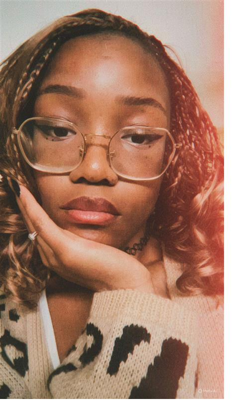
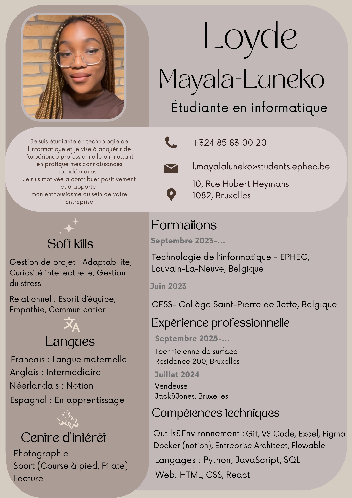
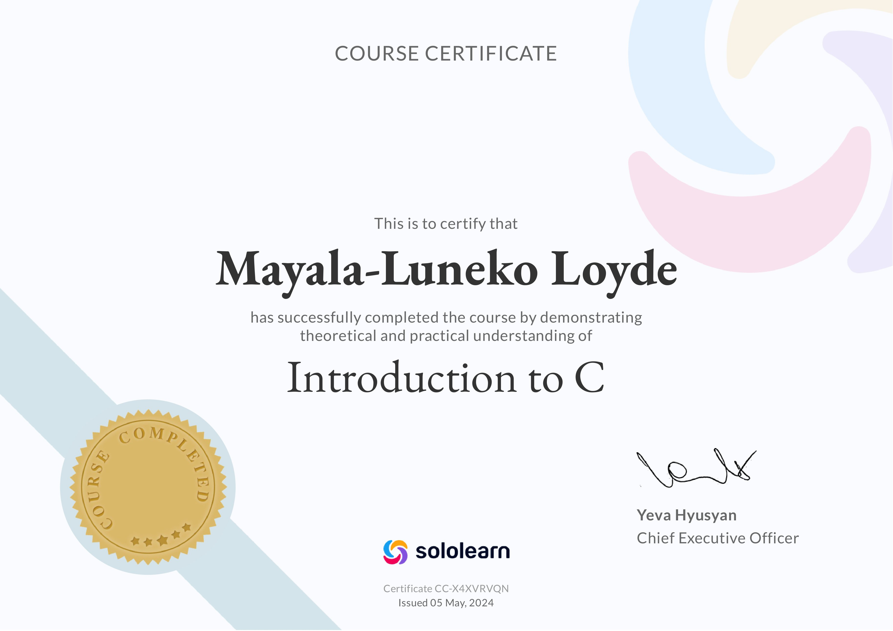
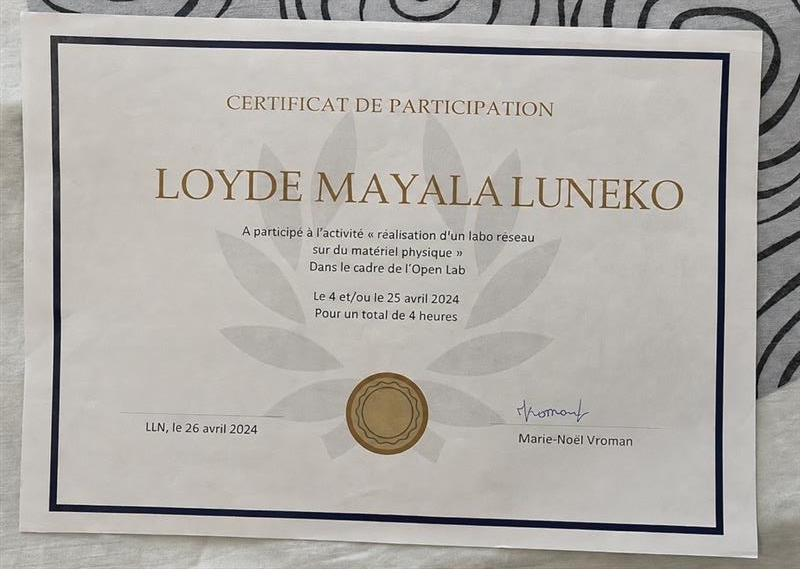
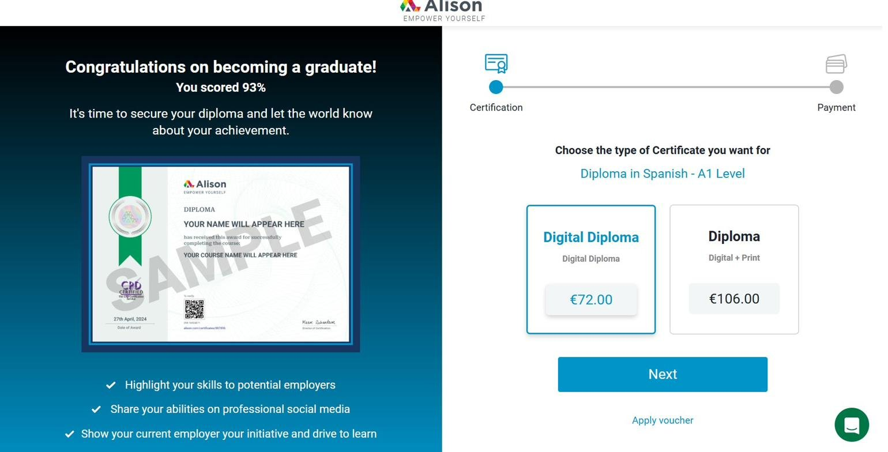
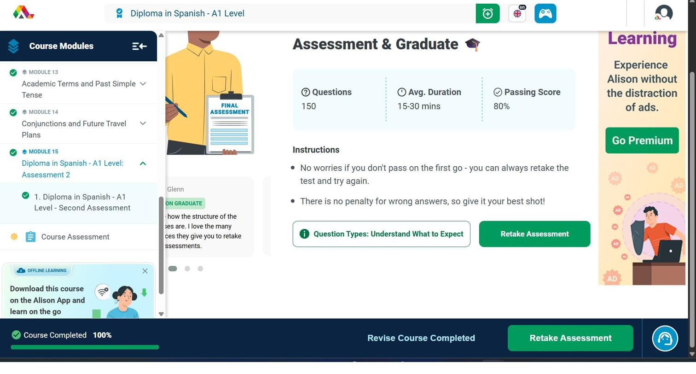
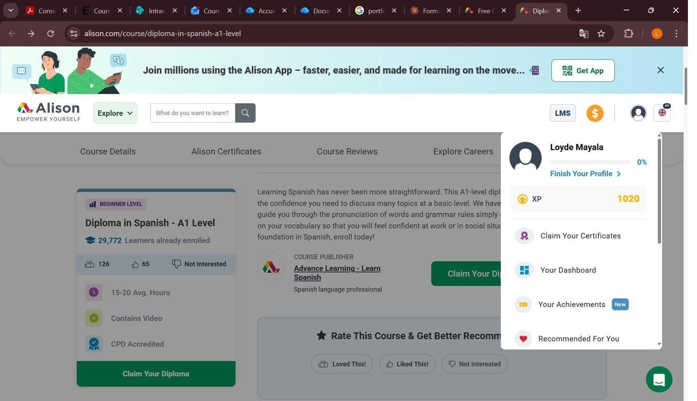
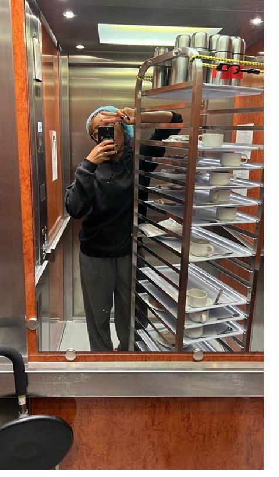
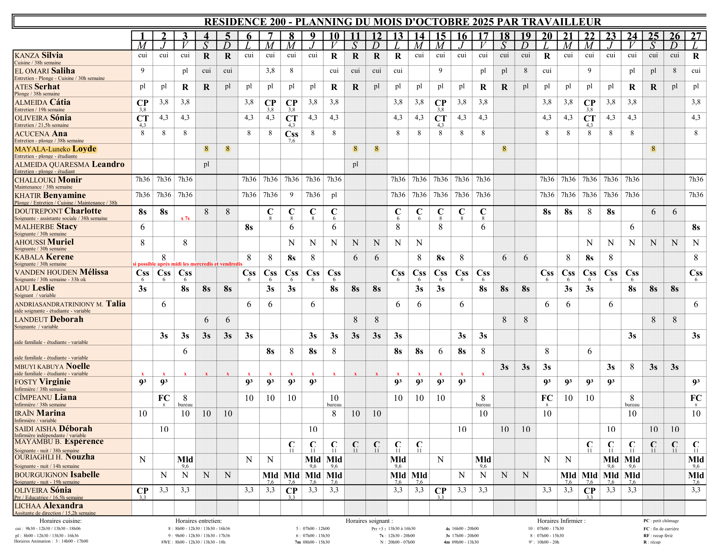

Depuis longtemps, j'ai besoin de donner du sens à ce que je fais. J'ai toujours aimé observer, analyser et comprendre pourquoi un problème existe et comment on peut l'améliorer. C'est cette manière de réfléchir qui m'a naturellement attirée vers l'analyse des données et l'analyse fonctionnelle.
Aujourd'hui, je ne peux pas dire avec certitude lequel de ces deux métiers me correspondra le plus, mais je sais une chose : je veux travailler dans un environnement où la réflexion, la logique et la compréhension des besoins humains ont une vraie importance. Ce qui m'attire, ce n'est pas uniquement l'aspect technique mais le fait que ces métiers permettent d'avoir un réel impact en transformant les besoins humains en solutions utiles.
Le monde des données me passionne parce qu'il est partout. Derrière chaque chiffre, il y a une décision à prendre ou un problème à résoudre. Un analyste ne se contente pas de "lire des données" : il cherche à comprendre une histoire et à donner du sens à des informations parfois complexes. C'est un domaine qui demande autant de logique que de réflexion humaine, et c'est précisément cet équilibre qui me motive.
Après mon bachelier, j'aimerais poursuivre une spécialisation en Data Analysis afin d'approfondir mes compétences dans le traitement, l'interprétation et la visualisation des données. Je souhaiterais également découvrir le métier d'analyste fonctionnel à travers des certifications ou des expériences professionnelles.
Mais au-delà du métier en lui-même, mon objectif est aussi de construire une carrière qui me permette de m'ouvrir au monde. Depuis plusieurs années, l'idée de travailler dans un environnement international me motive énormément. J'ai toujours été attirée par les langues, les cultures différentes et la découverte de nouvelles façons de penser. C'est pour cette raison que je souhaite continuer à améliorer mon anglais, développer mon espagnol et, plus tard, apprendre le mandarin. Pour moi, les langues représentent bien plus qu'une compétence professionnelle : elles permettent de créer des liens, de comprendre d'autres mentalités et d'oser sortir de sa zone de confort. Je suis quelqu'un qui a besoin d'évoluer constamment. Je ne veux pas simplement obtenir un diplôme et m'arrêter là. Dans dix ans, j'aimerais travailler dans une entreprise internationale dans laquelle je me sentirai utile et épanouie, être reconnue pour ma capacité d'analyse et mon professionnalisme, tout en continuant à apprendre chaque jour.
Je ne cherche pas seulement une carrière. Je cherche un parcours qui me ressemble.
Afin de renforcer mes compétences techniques et de développer ma logique informatique, j'ai suivi une formation d'introduction au langage C sur SoloLearn.
J'ai choisi cette activité car je voulais améliorer ma compréhension des concepts techniques et sortir d'un apprentissage uniquement théorique. Même si mon projet professionnel est orienté vers la Data Analysis et l'analyse fonctionnelle, je pense qu'il est essentiel de posséder des bases solides en programmation pour comprendre le fonctionnement global des systèmes informatiques.
Durant cette formation, j'ai appris les variables, les conditions, les boucles, les fonctions, les structures de données, les pointeurs ainsi que certaines notions liées à la mémoire. J'ai réalisé différents exercices pratiques qui demandaient de réfléchir de manière logique et structurée.
Cette activité m'a parfois mise en difficulté, notamment pour comprendre certaines erreurs dans le code ou résoudre des exercices plus complexes. Mais ces difficultés ont été enrichissantes : elles m'ont appris à être plus patiente et à décomposer les problèmes étape par étape.
Le langage C est particulièrement intéressant car il oblige à être rigoureux et précis. Même si je ne souhaite pas devenir développeuse spécialisée en C, comprendre les bases de la programmation me permettra d'être plus à l'aise dans des environnements techniques et de mieux collaborer avec des équipes IT. Dans les métiers de l'analyse, comprendre la logique des systèmes et le traitement des données est un vrai plus.
Cette activité m'a aussi permis de mieux comprendre ma manière de travailler. J'ai tendance à procrastiner au début, surtout lorsque je trouve une tâche difficile et c'était un peu le cas lors de cette formation. Mais j'ai appris à mieux gérer cela en me fixant des petits objectifs concrets. Dans chaque module, je me fixais des petits objectifs simples ce qui m'a aidé à avancer étape par étape. Cette manière de faire m'a permis de rester plus concentrée.

Dans le cadre de ma formation, j'ai participé à un laboratoire réseau réalisé sur du matériel physique à l'école. Cette activité m'a permis de mieux comprendre le fonctionnement concret des réseaux informatiques et d'appliquer des notions vues en cours.
Durant ce laboratoire, j'ai manipulé différents équipements et suivi plusieurs étapes techniques pour réaliser les configurations demandées. Cette expérience m'a permis de mieux comprendre la communication entre les appareils et l'importance de chaque élément dans une infrastructure réseau.
L'aspect le plus intéressant a été le passage de la théorie à la pratique. Certains concepts qui me semblaient abstraits en cours sont devenus plus clairs grâce à la manipulation concrète du matériel. C'est exactement le type de difficulté que j'avais identifié dans mes points faibles, et cette activité m'a aidée à progresser sur cet aspect.
En fait, comprendre l'environnement technique global dans lequel les systèmes et les données fonctionnent reste important. Un analyste qui comprend l'infrastructure réseau sera toujours plus efficace dans son travail.
Ce laboratoire m'a également permis de développer ma méthodologie et ma capacité à analyser les problèmes de manière structurée.

Dans le cadre de mon projet professionnel, j'ai décidé de commencer l'apprentissage de l'espagnol sur la plateforme Alison.com. Cette activité représentait une manière concrète de développer les compétences linguistiques nécessaires pour travailler dans un environnement international.
Durant cette formation, j'ai travaillé le vocabulaire de base, les expressions courantes, certaines règles grammaticales ainsi que la compréhension écrite et orale. J'ai réalisé différents exercices pour mémoriser les mots et améliorer ma compréhension.
Même si cette activité semblait plus simple au départ, elle m'a demandé beaucoup de discipline et de régularité. Apprendre une langue ne se limite pas à comprendre une leçon : il faut pratiquer régulièrement pour progresser. Cette expérience m'a montré que je suis capable d'apprendre de manière autonome lorsque je suis réellement motivée.
L'apprentissage de l'espagnol est directement lié à mon projet professionnel. Mon objectif est de travailler dans un environnement international, et les langues représentent un véritable avantage. Être capable de communiquer avec des personnes de différentes nationalités facilite la collaboration et permet d'être plus ouverte sur le monde.
Cette activité m'a aussi aidée à développer d'autres compétences comme la persévérance face aux exercices difficiles et l'autonomie dans l'apprentissage et une meilleure gestion du temps.



Dans le cadre de mon job étudiant en maison de repos, j'avais principalement comme tâches de distribuer les repas et d'effectuer certaines tâches d'entretien. Même si cette activité n'était pas directement liée à l'informatique, elle m'a permis de développer plusieurs compétences humaines essentielles.
Cette expérience m'a appris à être plus responsable et organisée. Je devais respecter un rythme précis, être ponctuelle et effectuer mes tâches avec sérieux. Travailler en maison de repos demande aussi beaucoup de patience et de respect envers les résidents.
Le contact quotidien avec les résidents m'a permis d'améliorer ma communication et mon écoute. J'ai appris à m'adapter à différentes personnes et à rester professionnelle même lors des journées plus fatigantes.
Ce lien avec mon projet professionnel est réel : même dans les métiers de l'analyse, les compétences humaines restent importantes. Je dois être capable de communiquer, comprendre les besoins des autres et travailler avec sérieux dans un environnement professionnel.
Cette expérience m'a aussi permis de gagner en maturité. Elle m'a confirmé que les compétences techniques ne suffisent pas : le comportement professionnel, l'organisation mais aussi la capacité de s'adapter sont importantes.


Au cours de ces trois années d'études, les différentes activités que j'ai réalisées m'ont permis de grandir autant sur le plan technique que personnel. Elles m'ont surtout aidée à mieux comprendre qui je suis, comment je fonctionne et dans quelle direction je souhaite évoluer.
À travers ces expériences, j'ai compris que mon projet professionnel ne se limite pas uniquement à l'apprentissage d'outils techniques. Évoluer dans le domaine de l'analyse demande aussi des qualités humaines, de l'autonomie, de la curiosité et une réelle capacité d'adaptation. Petit à petit, j'ai appris que la manière d'apprendre et de progresser est aussi importante que les connaissances elles-mêmes.
Les activités liées aux langues m'ont confirmé mon envie de travailler dans un environnement multiculturel. Elles m'ont appris la patience, la régularité et l'importance de la persévérance dans un apprentissage progressif. Les activités techniques, comme le langage C et le laboratoire réseau, m'ont permis de développer ma logique, ma rigueur et ma compréhension globale des systèmes informatiques. Enfin, mon expérience en maison de repos m'a beaucoup apporté sur le plan humain, notamment au niveau de la communication, de la gestion du stress et du sens des responsabilités.
Ces trois années m'ont aussi permis de mieux me connaître. J'ai identifié mes points forts, comme ma curiosité, ma persévérance et ma motivation à apprendre, mais aussi certains points à améliorer, notamment au niveau de la confiance en moi et de certaines compétences techniques encore en développement. J'ai également appris à mieux organiser mon travail et à avancer étape par étape pour ne pas me sentir dépassée.
Aujourd'hui, je ne sais pas exactement ce que je serai dans dix ans, et je pense que c'est normal. Mais ce que je sais avec certitude, c'est que je veux avancer dans une direction qui me ressemble, continuer à apprendre et évoluer, et surtout être fière du chemin que j'aurai parcouru. En regardant en arrière, je veux pouvoir me dire que j'ai fait les bons choix pour construire quelque chose de solide, d'authentique et de cohérent avec la personne que je suis devenue.